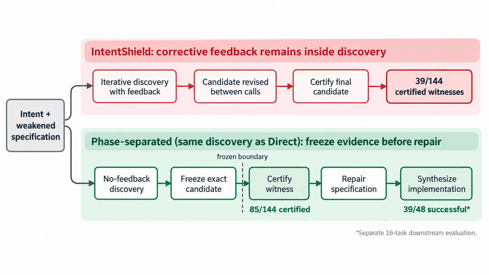

Lean is a secondary evaluation setting: discovery policies are run on 24 Verina Lean tasks, where the Verus no-feedback advantage does not reproduce.
Abstract
Correctness feedback suppresses the very evidence that specification-completeness auditing is designed to uncover: programs that satisfy a written contract but violate intended behavior. We demonstrate this objective reversal on 12 Verus/Rust tasks across four model families under matched call budgets. Independent no-feedback discovery more than doubles certified-witness yield relative to IntentShield's corrective-feedback loop (59.0% versus 27.1%). A format-matched iterative control places the larger share of this gap in feedback content, not independent restarts. The advantage holds in every model family and survives parser repair. A separate phase-separated execution matches the aggregate yield without reusing responses; most certified witnesses also fail held-out cases. Preserving these witnesses delivers stronger specification repair: Phase-Revised contracts achieve 81.3% implementation success, versus 62.5% for IS-Revised, with Direct-Revised close behind. Both no-feedback witness sources substantially outperform weakened contracts. The effect does not reproduce in the available Dafny and Lean evaluations, establishing an empirical boundary around the studied Verus/Rust workflow. Completeness auditing and correctness repair have opposing immediate objectives. Preserve and certify the admitted failure before repairing it.
Problem
Specification-completeness auditing tries to find programs that satisfy a weakened contract but violate intended behavior. Corrective verifier feedback may suppress exactly these witnesses, because it pushes the model to repair the wrong program the audit is looking for.
Approach
Discovery policies are compared on 12 Verus/Rust tasks from VeriContest, using four LLM families under matched call budgets. Direct makes independent attempts with no feedback. IntentShield feeds compiler, verifier and test feedback back into discovery. Phase runs Direct-style discovery, then freezes the candidate before certification and repair. A format-matched iterative control replaces semantic feedback with fixed placeholder feedback fields. Candidate witnesses are certified with verifier, compilation and oracle-test gates, and the effect is also checked on Dafny and on 24 Lean tasks from Verina.

Figure 1: Correctness feedback enters at different times. IntentShield uses it while searching for a witness. Phase uses the same discovery policy as Direct and introduces repair feedback only after the candidate has been frozen. The harness selects the highest-ranked candidate across all three calls (Section 2.1); “final candidate” means the selected output of discovery, not necessarily call 3. T
Results
On Verus, Direct certifies 59.0% of outcomes versus 27.1% for IntentShield. Contracts repaired from Phase witnesses reach 81.3% implementation success versus 62.5% for IntentShield-repaired contracts. The effect does not reproduce on Dafny or Lean, where Phase solves 8 of 48 Lean cells, compared with 12 for Direct and 14 for IntentShield.
Policy
Discovery
Certified
Direct
Independent, no feedback
85/144 (59.0%)
FMI
Iterative, dummy feedback
71/144 (49.3%)
IntentShield
Iterative, real feedback
39/144 (27.1%)
Model-Judgment
Iterative, self-assessment
34/144 (23.6%)
Phase
Independent, then freeze
85/144 (59.0%)
Certified-witness yield by discovery policy (Verus, 144 outcomes)